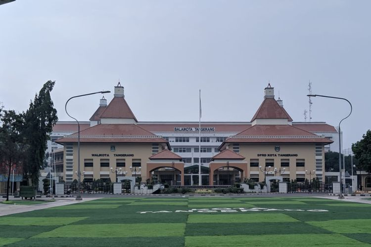

Sejarah
Nama "Tangerang" berasal dari sebutan masyarakat sekitar terhadap bangunan tugu dengan tinggi kira-kira 2,5 meter yang didirikan Pangeran Soegiri, putra Sultan Ageng Tirtayasa dari Kesultanan Banten, bersama-sama dengan masyarakat sekitar pada tanggal 5 Sapar tahun Wawu ( 1654 Masehi ) yang terletak kira-kira 500 meter di tepi barat bantaran sungai Cisadane tepatnya di Gardu Gede yang kini dikenal dengan nama Kampung Gerendeng. Fungsi tugu tersebut adalah sebagai pembatas atau penanda wilayah kekuasaan kesultanan Banten di sebelah barat Sungai Cisadane dengan wilayah yang dikuasi VOC di sebelah timur. Atas dasar fungsinya tersebut, masyarakat menyebut tugu dan daerah itu dengan sebutan "Tetengger" atau "Tanggeran" yang berarti "penanda".
Pada Masa Kolonialisme Belanda (abad XV), Sultan Banten mengangkat Tiga Aria / Maulana yang merupakan kerabat jauh Sultan dari Kerjaaan Sumedang Larang bernama Yudhanegara, Wangsakara dan Santika. Kegiatannya bertugas untuk membantu perekonomian Kesultanan Banten dengan melakukan perlawanan terhadap VOC dengan praktik Monopolinya. Tangerang Kota Benteng, Pada perjuangannya ketiga maulana tersebut membangun benteng pertahanan yang disebut masyarakat sekitar dengan istilah daerah "Benteng" atau "Bentengan". Hal ini turut mendasari sebutan Kota Tangerang yang dikenal dengan sebutan Kota Benteng. Saat ini sisa bangunan "Bentengan" tersebut berada di beberapa titik di bawah permukaan air Sungai Cisadane yang semakin melebar. .